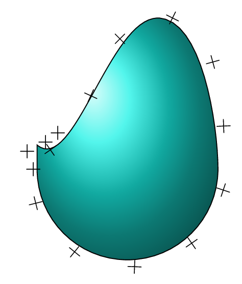
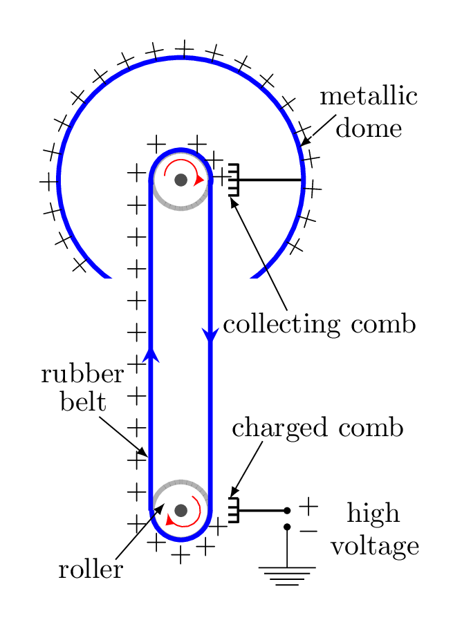

Section 1.7 Electric Potential
Electrical Work: When an electric force displaces a charged particle an electrical work is said to done. Since charge experience electric force only in an electric field such work is stored on a charged particle as an electric potential energy at that point. In other words, electrical work is an electrical potential energy, i.e.,
\begin{equation*}
W=F_{e}d
\end{equation*}
here, \(F_{e}\) stands for electrostatic force.
\begin{equation*}
\text{or,}\quad W_{ab} = \int\limits_{a}^{b}\vec{F_{a}}\cdot\vec{dl} = -\int\limits_{a}^{b}\vec{F_{e}}\cdot\vec{dl}
\end{equation*}
Here \(F_{a}\) is an applied force, which moves the charged particle in an electric field without acceleration. Unit of electrical work is Joule,J = Nm (Newton.meter).
Electric Potential Energy: The energy stored on a charged particle due its position in an electric field of other charge or charges. It is denoted by \(U\text{.}\)
\begin{equation*}
\Delta U = U_{b} - U_{a} = - W_{ab}
\end{equation*}
(i.e., Potential energy of b with respect to a).
\begin{equation*}
\Delta U =-q_{o} \int\limits_{a}^{b}\vec{E}\cdot\vec{dl} = - q_{o} E d
\end{equation*}
(for Uniform Electric Field).
Electrical force is a conservative force and when conservative force does negative work, the system gains potential energy. When conservative force does positive work, the system loses potential energy. Therefore if \(\Delta U \lt 0,\) charge moves along the direction of electric field. Unit of electric potential energy is Joule.
Electric Potential: It is a work done on a unit positive charge to bring it from infinity to any point in an electrical field of other charge/s. In other words, electric potential is an electric potential energy of a unit positive charge at a point in any field, i.e., electric potential energy per unit charge is known as electric potential at a point in any field. It is a scalar physical quantity.
Let \(q\) is any charge and its electric potential energy at that point in a field is \(U\) then electric potential at that point is
\begin{equation*}
V = \frac{U}{q},
\end{equation*}
\begin{equation*}
\text{or,}\quad U = W = qV.
\end{equation*}
\begin{equation*}
\text{But}\quad \Delta V = \frac{\Delta U }{q_{o}}
\end{equation*}
\begin{equation*}
= -\int\limits_{a}^{b}\vec{E}\cdot\vec{dl} = -\int\limits_{a}^{b}\frac{kq}{r^{2}}\,dr= k\frac{q}{r}
\end{equation*}
(for a point charge).
Where
\begin{equation*}
\hat{r}\cdot\vec{\,dr}=\,dr,
\end{equation*}
point \(b\) is taken at \(\infty\) and point \(a\) is at any point in the electric field. Unit of electric potential is Volt (V) = Joule/Coulomb (J/C). Remember that we can only define the potential \(V\) at a point if the force is conservative. 1
Potential Difference: It is a work done on a unit positive charge to bring it from one point to another point in a field, e.g., if a unit positive charge is brought from a point of electric potential \(V_{a}\) to another point of potential \(V_{b}\) then potential difference between the points is
\begin{equation*}
V_{ba} = \Delta V = V_{b} - V_{a}
\end{equation*}
(Potential of b with respect to a).
\begin{equation*}
V_{ba} = -\int\limits_{a}^{b}\vec{E}\cdot\vec{dl}
\end{equation*}
(Two Point Charges).
-ve sign indicates that charge is brought against an electric field, i.e., direction of force is opposite to the displacement. The work is a negative change in potential energy. If work done by a force is positive then potential energy is decreasing and vice a versa. Unit of potential difference is Volt.
Gradient: It is a change in scalar field 2 with respect to space and is a vector quantity whose direction is acting along the greatest change in that field. The gradient of a scalar field \(\phi\) is defined as
\begin{equation*}
\text{grad}\phi = \hat{i}\frac{\partial \phi}{\partial x} + \hat{j}\frac{\partial \phi}{\partial y}
+ \hat{k}\frac{\partial \phi}{\partial z}
\end{equation*}
\begin{equation*}
= \left(\hat{i}\frac{\partial}{\partial x} + \hat{j}\frac{\partial}{\partial y}
+ \hat{k}\frac{\partial}{\partial z}\right)\phi = \vec{\nabla\phi}
\end{equation*}
where an operator
\begin{equation*}
\nabla = \hat{i}\frac{\partial}{\partial x} + \hat{j}\frac{\partial}{\partial y} + \hat{k}\frac{\partial}{\partial z}
\end{equation*}
is known as \('Del'\) operator and read as a gradient or a grad, which is a vector quantity.
Potential Gradient:
\begin{equation*}
\Delta V = -\frac{W}{q}= -\frac{F\Delta l}{q}=-\frac{qE\Delta l}{q} = -E\Delta l
\end{equation*}
\begin{equation*}
\text{or,} \quad E = -\frac{\Delta V }{\Delta l}
\end{equation*}
\begin{equation}
\therefore\quad \vec{E} = - \vec{\nabla} V\tag{1.7.1}
\end{equation}
Unit of potential gradient is V/m or N/C.
Equipotential Surfaces: The portion of an electric field upon which the electrical potential has a fixed value is called a equipotential surfaces. Thus, \(\Delta V= 0\) between any two points on the equipotential surface, i.e., no work is required to move any charge on an equipotential surface. For a positive point charge equipotential surfaces are concentric spherical surfaces around charge at center as shown in Figure 1.7.1.(a). Equipotential surfaces for a positive and negative charges are shown in Figure 1.7.1.(b), and that for two similar charges are shown in Figure 1.7.1.(c).
Relationship between equipotential surface and electric field:
- Electric field is perpendicular to equipotential lines (surfaces) and pointed along the decresing potential.
- Electric filed is stronger where equipotential lines (surfaces) are closer to each other.
Corona Discharge: It is an electrical discharge appearing on and around the surface of a conductor by ionization of the surrounding fluid molecules. when a conductor of very large curvature is exposed in a very high electric field corona discharge occurs. The phenomenon of corona discharge can be understood by the following concept.

Consider two conducting spherical sells of radius \(r_{1}\) and \(r_{2}\) containing charges \(q_{1} \) and \(q_{2}\text{.}\) The potential on the surface of these sells are
\begin{equation*}
V_{1} = \frac{kq_{1}}{r_{1}}
\end{equation*}
and
\begin{equation*}
V_{2} = \frac{kq_{2}}{r_{2}},
\end{equation*}
respectively. Suppose they are so designed that they have same potential on the surface, i.e.,
\begin{equation*}
V_{1}= V_{2}
\end{equation*}
\begin{equation*}
\text{or,}\quad \frac{kq_{1}}{r_{1}} = \frac{kq_{2}}{r_{2}}
\end{equation*}
\begin{equation*}
\text{or,}\quad \frac{q_{1}}{q_{2}} = \frac{r_{1}}{r_{2}}
\end{equation*}
\begin{equation*}
\text{or,}\quad \frac{\frac{q_{1}}{4\pi r^{2}_{1}}}{\frac{q_{2}}{4\pi r^{2}_{2}}}
= \frac{\frac{r_{1}}{4\pi r^{2}_{1}}}{\frac{r_{2}}{4\pi r^{2}_{2}}}
\end{equation*}
\begin{equation*}
\text{or,}\quad \frac{\sigma_{1}}{\sigma_{2}} = \frac{r_{2}}{r_{1}}
\end{equation*}
\begin{equation*}
i.e., \quad \sigma \varpropto \frac{1}{r}
\end{equation*}
or, surface charge density is inversely proportional to radius of curvature. Hence, as the radius of curvature of a conductor decreases (or, its curvature increases) surface charge density increases. The surface charge density increases enormously at the pointed end of the conductor because of high curvature [Figure 1.7.2]. Pointed end produces such a high field that the nearby air molecules stretch as the displacement of center of gravity of their negative and positive charges. Since opposite charge attracts each other the charges on the conductors start neutralizing with the opposite charge of air molecules by producing bluish light surrounding the conductor without a spark such phenomenon is called a corona discharge. In this case no electrical breakdown occurs in air molecules.
Van de Graff generator:

It is a device designed by Van de Graaff in 1929 to generate very high potential differences. It consists of two combs, a conveyor rubber belt (which is mounted on two motorized rollers), and a large conducting dome. Charges are spread on belt with the help of charged comb as comb discharges its charge on air molecules which later stick onto the belt and carried over near the upper comb which then neutralizes these charges on air molecule because of electrostatic induction. Hence the similar kind of charges are getting collected on a big spherical dome connected with the upper comb (Figure 1.7.3).
Conservative Force: It is a force which is directed along a certain fixed point. Workdone by these force around a closed path is always zero. Gravitational force, electric force, elastic spring force, are some examples of conservative forces. Non-conservative force: It is a force which change its direction depends upon the object motion. Workdone by these force around a closed path is always non-zero. Frictional force, viscous force, air drag force or any kind of resistive forces are non-conservative forces.
Fields: A field is a region of space whose every point defines some kind of physical quantities. Depending upon the nature of physical quantity there are two types of field, scalar field and vector field. A force field defines a force vector at every location in space. A magnetic field defines a magnetic field vector at every location in space. A potential energy field defines a potential energy at every location in space. The gravitational field is a vector field which expresses the value of gravitational force, and Higg’s field is a scalar field which defines the mass or energy of a particle. If \(\phi (x,y,z)\) is a scalar function associated with every point (x,y,z) of any region in space, then the region is defined as a scalar field. Again, if \(\vec{V}(x,y,z)\) is a vector associated with every point (x,y,z) of any region in space, then the region is defined as a vector field.